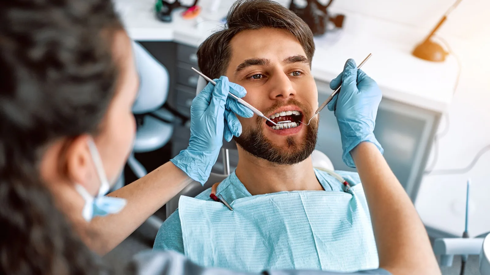

General & Preventive Dentistry
Repairing a tooth without taking more than you need to.
A filling replaces the part of a tooth that decay, a crack or wear has taken away. It is the most common treatment in dentistry and, done carefully, one of the most durable.
Dr Meg’s approach to fillings is conservative. The aim is to remove what is diseased and keep what is sound, because every millimetre of healthy tooth structure you keep is structure that does not need replacing later. Over-preparing a tooth today shortens its life.

Tooth-coloured composite
We place tooth-coloured composite resin rather than amalgam. Composite bonds to the remaining tooth, which means less healthy structure has to be removed to hold it in place, and it can be shaded to match the tooth around it.
Composite is placed in layers, each set with a curing light, then shaped to match the contour of the original tooth and adjusted so it meets the opposing tooth properly. That last step matters more than people realise — a filling left even slightly high causes soreness and can crack the tooth over time.
Comfort during the appointment
Most fillings are done under local anaesthetic. Dr Meg takes her time with the injection and uses a slow technique that many patients find easier than they expected, though no dentist can promise a completely pain-free appointment. She will check you are numb before starting and check in with you as she works.
Very small, shallow areas can sometimes be treated without anaesthetic. That is a conversation, not an assumption.
When a filling is not the right answer
There is a point at which a filling stops being sensible. Where decay is extensive, where a tooth has already been heavily filled, or where a cusp has fractured, a large filling can weaken what remains and set up a split later. In those cases a crown or an onlay may protect the tooth better, and Dr Meg will explain the reasoning and the cost difference before you decide.
Where decay has reached the nerve, root canal treatment may be needed before the tooth can be restored.
Looking after a filling
Composite fillings hold up well with reasonable care. Brushing twice daily, cleaning between teeth, and moderating how often you have sugar all extend the life of the restoration. If you grind your teeth, a night guard protects both your fillings and your natural teeth.
Frequently asked questions
It depends on the size, the tooth, your bite, your grinding habits and your home care. Fillings are durable but not permanent, and no dentist can put an honest number on any individual filling. Dr Meg will give you a realistic picture at your appointment.
Composite is shade-matched to the surrounding tooth and is generally very difficult to pick in normal conversation. Front teeth are matched with more care because they are more visible and more translucent.
We place tooth-coloured composite. If you have existing amalgam fillings that are sound, they usually do not need replacing simply because they are amalgam.
Some sensitivity to cold or pressure for a few days to a few weeks is common, particularly after a deeper filling, as the nerve settles. If it is worsening, lingering after the cold is gone, or waking you at night, phone us — that needs looking at.
Very early enamel demineralisation can sometimes be arrested with fluoride, diet changes and better cleaning. Once decay has broken through into the dentine, it needs restoring. Dr Meg will tell you which stage you are at.
It depends on the size, the surfaces involved and the tooth. You will be given the cost before treatment goes ahead, not after.